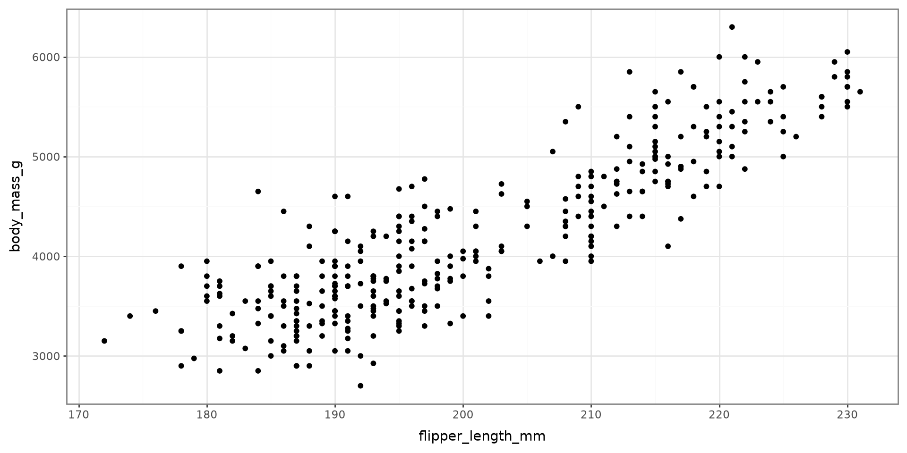
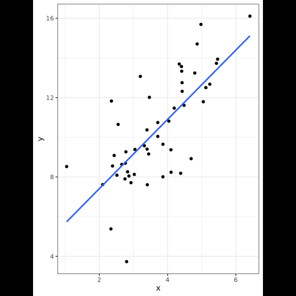
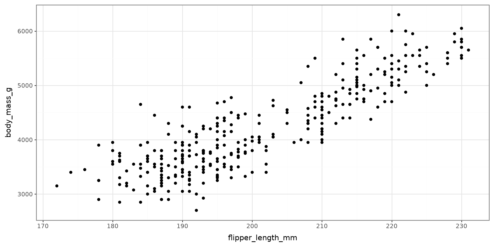
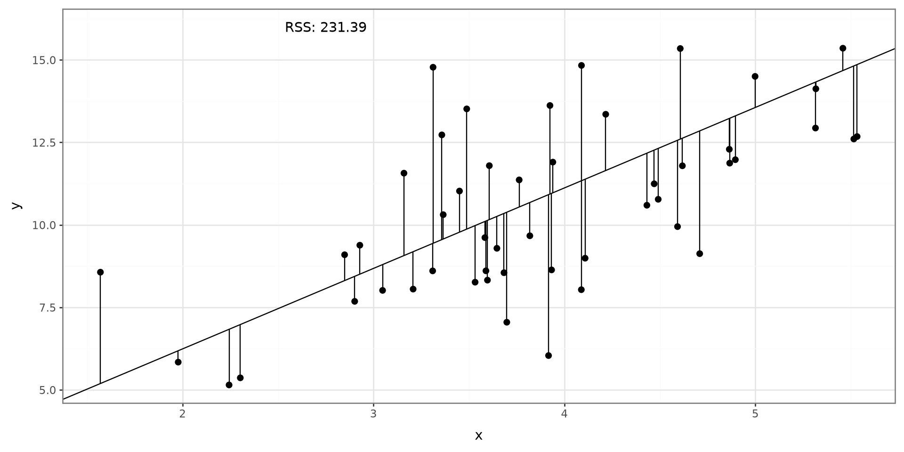
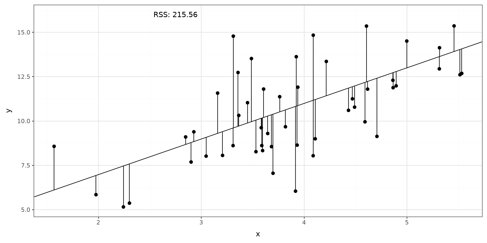
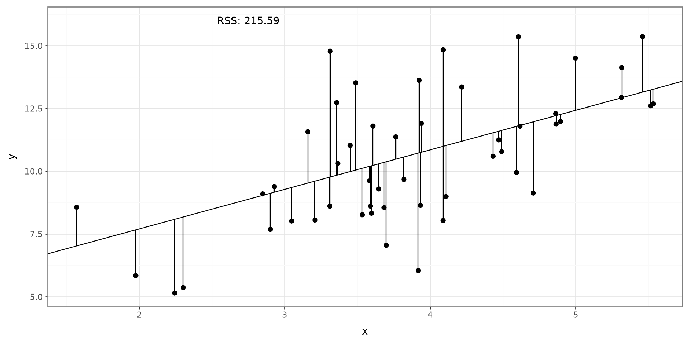
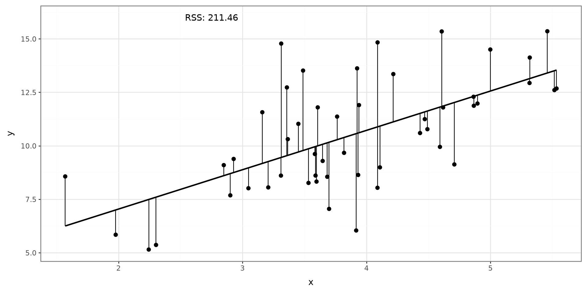

Linear Regression
Learning Objectives
- Linear Regression
- Multivariable Linear Regression
Python Modules, Functions, and Parameters
Scatter Plot

Linear Regression
Linear Regression
Linear Regression Simulation
Multivariable Linear Regresion
MLR Simulation Study
Matrix Formulation
Linear Regression
Linear regression is used to model the association between a set of predictor variables (x’s) and an outcome variable (y). Linear regression will fit a line that best describes the data points.
Scatter Plot

Simple Linear Regression
Simple linear regression will model the association between one predictor variable and an outcome:
\[ Y = \beta_0 + \beta_1 X + \epsilon \]
\(\beta_0\): Intercept term
\(\beta_1\): Slope term
\(\epsilon\sim N(0,\sigma^2)\)
Estimated Model
\[ \hat Y = \hat \beta_0 + \hat \beta_1 X \]
Process

Process

Sums of Error Squared
\[ RSS = \sum^n_{i=1}(Y_i-\hat Y_i)^2 \]
Searching

Searching

Searching

Searching

Final

Linear Regression Simulation
Linear Regression
Linear Regression Simulation
Multivariable Linear Regresion
MLR Simulation Study
Matrix Formulation
Generate X Values
Simulate 250 independent values (x) from \(N(3, 1)\) and plot a histogram
Generate Y Values
Create a new variable with the following formula:
\[ Y_i = 3 X_i + 20 \] Create a Scatter Plot
Generate Error Term
Generate \(\epsilon_i\sim N(0, 2)\)
Create a histogram
Add error term
Create final form of \(Y_i\):
\[ Y_i = 3 X_i + 20 + \epsilon_i \]
Create a scatter plot
Simulation Study
To confirm that smf.ols() works, repeat the process 100 times and obtain the average \(\beta\) estimates:
- Generate 250 X values
- Create Y Value
- Add error term
- Fit Model
- Store Values
- Find the means of the coefficient
Python Code of Simulation Study
# Generating seends
simulation_seeds = np.arange(1_000) + RANDOM_SEED
# Simulation study
def simulate_coefficients(seed):
local_rng = np.random.default_rng(seed)
x = local_rng.normal(loc=3, scale=1, size=250)
expected_y = 3 * x + 20
error = local_rng.normal(loc=0, scale=2, size=250)
y = expected_y + error
simulated_data = pd.DataFrame({"x": x, "y": y})
result = smf.ols("y ~ x", data=simulated_data).fit()
return result.params
sim_results = pd.DataFrame(
[simulate_coefficients(seed) for seed in simulation_seeds]
)
sim_results.mean().rename("mean_estimate").to_frame()| mean_estimate | |
|---|---|
| Intercept | 20.002111 |
| x | 2.998998 |
Multivariable Linear Regresion
Linear Regression
Linear Regression Simulation
Multivariable Linear Regresion
MLR Simulation Study
Matrix Formulation
MLR
Multivariable linear regression models are used when more than one explanatory variable is used to explain the outcome of interest.
Continuous Variable
To fit an additional continuous random variable to the model, we will only need to add it to the model:
\[Y = \beta_0 +\beta_1 X_1 + \beta_2 X_2\]
Example
Using the Palmer Penguins data, fit a model with body_mass_g as the outcome and flipper_length_mm and bill_length_mm as predictors.
| Dep. Variable: | body_mass_g | R-squared: | 0.760 |
|---|---|---|---|
| Model: | OLS | Adj. R-squared: | 0.759 |
| Method: | Least Squares | F-statistic: | 536.6 |
| Date: | Wed, 19 Aug 2026 | Prob (F-statistic): | 9.09e-106 |
| Time: | 23:13:16 | Log-Likelihood: | -2527.7 |
| No. Observations: | 342 | AIC: | 5061. |
| Df Residuals: | 339 | BIC: | 5073. |
| Df Model: | 2 | ||
| Covariance Type: | nonrobust |
| coef | std err | t | P>|t| | [0.025 | 0.975] | |
|---|---|---|---|---|---|---|
| Intercept | -5736.8972 | 307.959 | -18.629 | 0.000 | -6342.649 | -5131.146 |
| flipper_length_mm | 48.1449 | 2.011 | 23.939 | 0.000 | 44.189 | 52.101 |
| bill_length_mm | 6.0475 | 5.180 | 1.168 | 0.244 | -4.141 | 16.236 |
| Omnibus: | 5.475 | Durbin-Watson: | 2.113 |
|---|---|---|---|
| Prob(Omnibus): | 0.065 | Jarque-Bera (JB): | 5.408 |
| Skew: | 0.308 | Prob(JB): | 0.0669 |
| Kurtosis: | 3.025 | Cond. No. | 2.98e+03 |
Notes:
[1] Standard Errors assume that the covariance matrix of the errors is correctly specified.
[2] The condition number is large, 2.98e+03. This might indicate that there are
strong multicollinearity or other numerical problems.
Interpretation
| Dep. Variable: | body_mass_g | R-squared: | 0.760 |
|---|---|---|---|
| Model: | OLS | Adj. R-squared: | 0.759 |
| Method: | Least Squares | F-statistic: | 536.6 |
| Date: | Wed, 19 Aug 2026 | Prob (F-statistic): | 9.09e-106 |
| Time: | 23:13:16 | Log-Likelihood: | -2527.7 |
| No. Observations: | 342 | AIC: | 5061. |
| Df Residuals: | 339 | BIC: | 5073. |
| Df Model: | 2 | ||
| Covariance Type: | nonrobust |
| coef | std err | t | P>|t| | [0.025 | 0.975] | |
|---|---|---|---|---|---|---|
| Intercept | -5736.8972 | 307.959 | -18.629 | 0.000 | -6342.649 | -5131.146 |
| flipper_length_mm | 48.1449 | 2.011 | 23.939 | 0.000 | 44.189 | 52.101 |
| bill_length_mm | 6.0475 | 5.180 | 1.168 | 0.244 | -4.141 | 16.236 |
| Omnibus: | 5.475 | Durbin-Watson: | 2.113 |
|---|---|---|---|
| Prob(Omnibus): | 0.065 | Jarque-Bera (JB): | 5.408 |
| Skew: | 0.308 | Prob(JB): | 0.0669 |
| Kurtosis: | 3.025 | Cond. No. | 2.98e+03 |
Notes:
[1] Standard Errors assume that the covariance matrix of the errors is correctly specified.
[2] The condition number is large, 2.98e+03. This might indicate that there are
strong multicollinearity or other numerical problems.
Categorical Variable
A categorical variable can be included in a model, but a reference category must be specified.
Fitting a model with categorical variables
To fit a model with categorical variables, we must utilize dummy (binary) variables that indicate which category is being referenced. We use \(C-1\) dummy variables where \(C\) indicates the number of categories. When coded correctly, each category will be represented by a combination of dummy variables.
Example
If we have 4 categories, we will need 3 dummy variables:
| Cat 1 | Cat 2 | Cat 3 | Cat 4 | |
|---|---|---|---|---|
| Dummy 1 | 1 | 0 | 0 | 0 |
| Dummy 2 | 0 | 1 | 0 | 0 |
| Dummy 3 | 0 | 0 | 1 | 0 |
Which one is the reference category?
Fitting a model with categorical variables
Using the Palmer Penguins data, fit a model with body_mass_g as the outcome and flipper_length_mm and island as predictors.
| Dep. Variable: | body_mass_g | R-squared: | 0.774 |
|---|---|---|---|
| Model: | OLS | Adj. R-squared: | 0.772 |
| Method: | Least Squares | F-statistic: | 386.4 |
| Date: | Wed, 19 Aug 2026 | Prob (F-statistic): | 7.60e-109 |
| Time: | 23:13:16 | Log-Likelihood: | -2517.3 |
| No. Observations: | 342 | AIC: | 5043. |
| Df Residuals: | 338 | BIC: | 5058. |
| Df Model: | 3 | ||
| Covariance Type: | nonrobust |
| coef | std err | t | P>|t| | [0.025 | 0.975] | |
|---|---|---|---|---|---|---|
| Intercept | -4624.9820 | 392.409 | -11.786 | 0.000 | -5396.853 | -3853.111 |
| C(island)[T.Dream] | -262.1831 | 54.971 | -4.769 | 0.000 | -370.311 | -154.055 |
| C(island)[T.Torgersen] | -185.1284 | 70.302 | -2.633 | 0.009 | -323.413 | -46.844 |
| flipper_length_mm | 44.5432 | 1.866 | 23.872 | 0.000 | 40.873 | 48.213 |
| Omnibus: | 6.196 | Durbin-Watson: | 2.387 |
|---|---|---|---|
| Prob(Omnibus): | 0.045 | Jarque-Bera (JB): | 5.956 |
| Skew: | 0.302 | Prob(JB): | 0.0509 |
| Kurtosis: | 3.228 | Cond. No. | 3.85e+03 |
Notes:
[1] Standard Errors assume that the covariance matrix of the errors is correctly specified.
[2] The condition number is large, 3.85e+03. This might indicate that there are
strong multicollinearity or other numerical problems.
MLR Simulation Study
Linear Regression
Linear Regression Simulation
Multivariable Linear Regresion
MLR Simulation Study
Matrix Formulation
Simulation Study
Simulate 1000 random variables from the following model:
\[Y = 3 + 2X_1 + 4X_2 + \epsilon\]
\(X_1\sim N(2,1)\)
\(X_2\sim N(-4,1)\)
\(\epsilon\sim N(0, 2)\)
# The executed data are created in the setup chunk.
# Equivalent Python generation code:
rng = np.random.default_rng(911)
x1 = rng.normal(loc=2, scale=1, size=1_000)
x2 = rng.normal(loc=-4, scale=1, size=1_000)
y = 3 + 2 * x1 + 4 * x2 + rng.normal(
loc=0,
scale=np.sqrt(2),
size=1_000,
)
mlr_simulation = pd.DataFrame({"x1": x1, "x2": x2, "y": y})Fit Model
Fit a model between \(Y\) and \(X_1\).
Repeat the process 1000 times. and answer the following questions:
On average does \(\beta_1\) get estimated correctly? Why?
What is the average model variance?
MLR Model
Instead of fitting a simple linear regression model. Fit a model that will include predictor \(X_2\). This can be done by adding \(X_2\) in Python:
| Dep. Variable: | y | R-squared: | 0.906 |
|---|---|---|---|
| Model: | OLS | Adj. R-squared: | 0.906 |
| Method: | Least Squares | F-statistic: | 4831. |
| Date: | Wed, 19 Aug 2026 | Prob (F-statistic): | 0.00 |
| Time: | 23:13:16 | Log-Likelihood: | -1792.1 |
| No. Observations: | 1000 | AIC: | 3590. |
| Df Residuals: | 997 | BIC: | 3605. |
| Df Model: | 2 | ||
| Covariance Type: | nonrobust |
| coef | std err | t | P>|t| | [0.025 | 0.975] | |
|---|---|---|---|---|---|---|
| Intercept | 3.1269 | 0.215 | 14.566 | 0.000 | 2.706 | 3.548 |
| x1 | 1.9037 | 0.045 | 42.020 | 0.000 | 1.815 | 1.993 |
| x2 | 3.9834 | 0.046 | 87.184 | 0.000 | 3.894 | 4.073 |
| Omnibus: | 0.837 | Durbin-Watson: | 2.115 |
|---|---|---|---|
| Prob(Omnibus): | 0.658 | Jarque-Bera (JB): | 0.706 |
| Skew: | -0.029 | Prob(JB): | 0.702 |
| Kurtosis: | 3.116 | Cond. No. | 22.6 |
Notes:
[1] Standard Errors assume that the covariance matrix of the errors is correctly specified.
Modify your simulation study and see what happens to \(\beta_1\) and the model variance.
Matrix Formulation
Linear Regression
Linear Regression Simulation
Multivariable Linear Regresion
MLR Simulation Study
Matrix Formulation
Matrix Formulation
\[Y_i = \boldsymbol X_i^\mathrm T \boldsymbol \beta + \epsilon_i\]
\(Y_i\): Outcome Variable
\(\boldsymbol X_i\): Predictors
\(\boldsymbol \beta\): Coefficients
\(\epsilon_i\): error term
Matrix Formulation
\[\boldsymbol\beta = (\boldsymbol X^\mathrm T \boldsymbol X)^{-1} \boldsymbol X^\mathrm T \boldsymbol Y\]